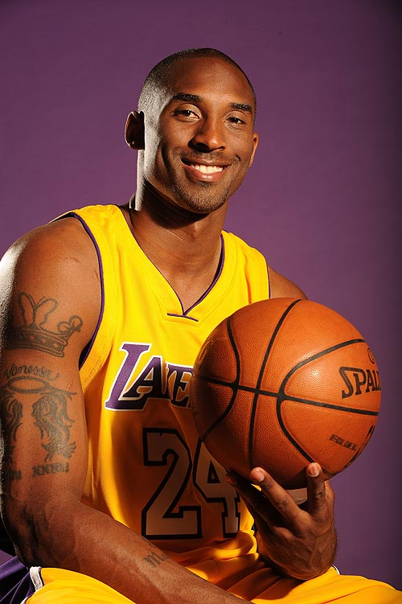

ife.baidu.com
2021.04
Kobe
Bean Bryant
曼巴精神永存！
24
W
ty
科比，不说再见！
科比的好胜心，可以说是历史第一，他可是带着7根健康手指，完成单赛季7次绝杀，这得需要多大的信念完成。乔丹能高烧砍30+得分，科比能现场把手指掰回去继续比赛，他的求胜欲战胜了身体上的疼痛。这句话就能看出，科比想要获胜的信念是多么强大。
无论谁防我，我都相信你会在我之前崩溃！面对顶级防守球员的围剿，很多球员心理防线会崩塌，布克就曾吐槽过被包夹，可以看出被针对防守，真的容易心态失衡。但是科比就不一样，他的进攻会让防守者先崩溃，比如81分那一场，猛龙队全都崩溃了！
科比追求胜利，已经追求到了极致，对于他而言，进入总决赛没有夺冠就是失败。因为一个赛季的努力，就在最后7场拼个最终结果，在篮球里没有冠军，亚军，季军，只有一个总冠军。所以拿第2名，那就意味自己输了，而且是头号输家！
小飞侠----------湖人老大!!!
黑曼巴----------永不言弃!!!
科比----------永远的神!!!
TheBlack Mamba
凌晨四点的
洛杉矶
凌晨四点的洛杉矶。“你为什么能如此成功？”记者问。“你知道洛杉矶每天早上4点钟是什么样子吗？”科比反问道。记者摇摇头说：“不知道。那你说说洛杉矶每天早上4点钟究竟是什么样？”
科比挠挠头，说：“满天星星，寥落的灯光，行人很少。”说到这里，科比笑了，“究竟是什么样子，我也不太清楚。但这没有关系，你说是吗？每天早上4点，洛杉矶仍然在黑暗中，我就起床行走在黑暗的洛杉矶街道上。一天过去了，洛杉矶凌晨的黑暗没有改变；两天过去了，凌晨的黑暗依然没有改变；10多年过去了，洛杉矶早晨4点的黑暗仍然没有改变，但我已变成了肌肉强健、有体能、有力量、有着很高投篮命中率的运动员。”
从科比的这番话中，我们似乎不难明白，为何科比自出道以来每个赛季都表现得如此高效。他现在仍能在比自己年轻10岁的年轻队员头上扣篮，并创出了单场比赛得81分的个人纪录。
科比用他的坚守和付出诠释了MVP的霸道。科比是一个不折不扣的男人，他可以忘却那3根手指，可以在场上不顾伤痛的去打球，他更像是一个战神。科比可能会在队医的劝告时用他那充满力量的眼睛告诉他：我是朝湖人巅峰去的，要我休息，除非我不能动了。韶华飞逝，光阴荏苒。十三年的风雨征程，十三年的流汗流泪流血的打拼，科比已然荣誉满身功成名就...
黑曼巴科比·比恩·布莱恩特
总有人要赢，为什么不是我？............... 科比
第二名，意味是头号输家............... 小飞侠
你见过凌晨4点的洛杉矶吗？............... 黑曼巴
Black Mamba
科比·布莱恩特
就算世界抛弃了我，
至少我还有篮球！
I don’t want to be the next Michael Jordan, I only want to be Kobe Bryant.我不想做下一个迈克尔·乔丹，我只想做科比·布莱恩特。
ife.baidu.com